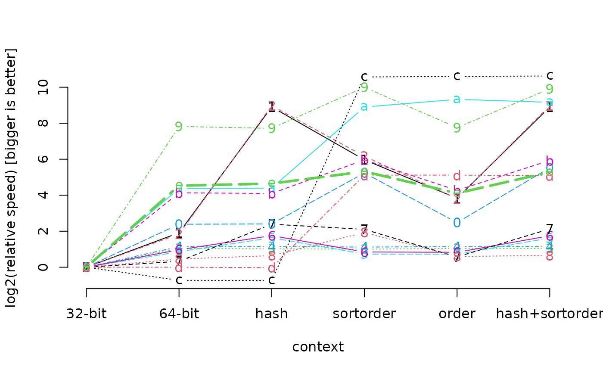
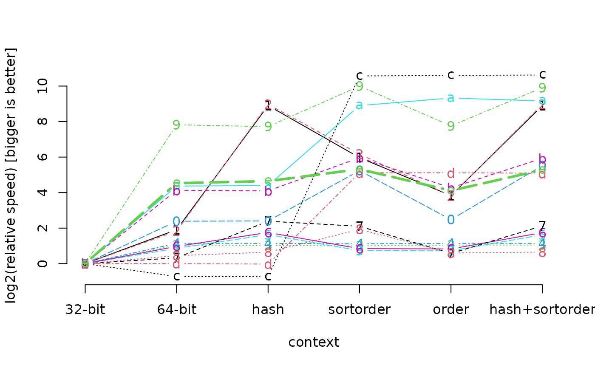

Results of performance measurement on a Core i7 Lenovo T410 8 GB RAM under Windows 7 64bit
Source:R/data.R
benchmark64.data.RdThese are the results of calling benchmark64()
Usage
data(benchmark64.data)Examples
data(benchmark64.data)
print(benchmark64.data)
#> 32-bit 64-bit hashcache sortordercache
#> cache 2.546532e-05 1.522116e-05 3.340000000 4.900000e+00
#> match(s,b) 2.370000e+00 6.300000e-01 0.004950495 3.785714e-02
#> s %in% b 2.390000e+00 6.700000e-01 0.004761905 3.333333e-02
#> match(b,s) 1.280000e+00 6.200000e-01 0.630000000 6.400000e-01
#> b %in% s 1.390000e+00 6.300000e-01 0.630000000 6.400000e-01
#> match(b,b) 7.020000e+00 3.860000e+00 2.260000000 4.230000e+00
#> b %in% b 7.420000e+00 3.790000e+00 2.200000000 4.130000e+00
#> duplicated(b) 2.620000e+00 2.090000e+00 0.500000000 6.100000e-01
#> unique(b) 2.860000e+00 2.090000e+00 1.830000000 7.500000e-01
#> table(b) 5.105700e+02 2.260000e+00 2.430000000 5.000000e-01
#> sort(b) 8.420000e+00 1.610000e+00 1.590000000 2.233333e-01
#> order(b) 5.349000e+01 2.590000e+00 2.540000000 1.120000e-01
#> rank(b) 5.614000e+01 3.200000e+00 3.280000000 9.000000e-01
#> quantile(b) 9.600000e-01 1.590000e+00 1.600000000 6.318348e-04
#> summary(b) 1.640000e+00 1.640000e+00 1.670000000 4.727273e-02
#> SESSION 8.499700e+02 3.680002e+01 33.954807692 2.131084e+01
#> ordercache allcache
#> cache 23.620000000 8.590000e+00
#> match(s,b) 0.166666667 4.950495e-03
#> s %in% b 0.170000000 4.761905e-03
#> match(b,s) 0.620000000 6.200000e-01
#> b %in% s 0.630000000 6.300000e-01
#> match(b,b) 4.260000000 2.280000e+00
#> b %in% b 4.180000000 2.210000e+00
#> duplicated(b) 1.760000000 6.000000e-01
#> unique(b) 1.890000000 1.820000e+00
#> table(b) 2.360000000 5.300000e-01
#> sort(b) 1.510000000 1.833333e-01
#> order(b) 0.083333333 9.333333e-02
#> rank(b) 2.910000000 9.200000e-01
#> quantile(b) 0.000618047 6.082725e-04
#> summary(b) 0.047272727 4.818182e-02
#> SESSION 49.277285479 2.187034e+01
matplot(log2(benchmark64.data[-1,1]/benchmark64.data[-1,])
, pch=c("3", "6", "h", "s", "o", "a")
, xlab="tasks [last=session]"
, ylab="log2(relative speed) [bigger is better]"
)
 matplot(t(log2(benchmark64.data[-1,1]/benchmark64.data[-1,]))
, axes=FALSE
, type="b"
, lwd=c(rep(1, 14), 3)
, xlab="context"
, ylab="log2(relative speed) [bigger is better]"
)
axis(1
, labels=c("32-bit", "64-bit", "hash", "sortorder", "order", "hash+sortorder")
, at=1:6
)
axis(2)

matplot(t(log2(benchmark64.data[-1,1]/benchmark64.data[-1,]))
, axes=FALSE
, type="b"
, lwd=c(rep(1, 14), 3)
, xlab="context"
, ylab="log2(relative speed) [bigger is better]"
)
axis(1
, labels=c("32-bit", "64-bit", "hash", "sortorder", "order", "hash+sortorder")
, at=1:6
)
axis(2)
